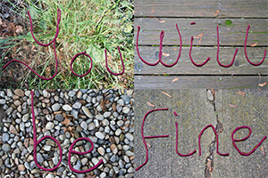
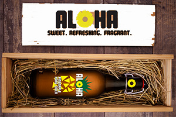

This is first part of the final project I did for my Photography class. We had to make photos that represented something we have learned in our lives so far. This is the second part of the final project for my Photography class. It is the alphabet made out of gummy bears in the font Helvetica.This is the word Gummy made out of my gummy alphabet from my Photography final.

This is a part of my VCD 1 final. I made a logo and packaging for a pineapple cider company I made up called Aloha.